Part 1 — Course Overview
📝 41 annotationsWelcome & course setup
Welcome, everyone, to fall quarter and welcome to CS329A.
I hope you made it to the right class. This class is on self-improving AI agents. Anyone made it to the right class here? Yes. Yes? OK. How many of you are here and doing masters at Stanford?
OK. PhD? OK. Few of you. And then undergrad? OK. So masters is the big crowd here. There's a good balance. It's a really good balance. So we'll introduce ourselves. So I'm Akansha. I have been working in large language models for a while, and I'm an adjunct professor at Stanford. And I'm also in research at a startup called Reflection AI.
Hi, I'm Azalia Mirhoseini I'm. An assistant professor in the CS Department. And Akanksha and I met each other when we were at Google Brain. Google Brain. Yeah, back in the day. And then Google DeepMind. And I also worked on Claude and Anthropic and Gemini at Google DeepMind. And we are so excited to teach this course again. This is the second time we're teaching. Of course, we have made some updates, both to the lectures and also the way we are conducting everything for the course.
And we were just so amazed by the amount of interest for people to join this course. So we are excited to have you here. The course website is at cs239a.stanford.edu. We have updated the website in terms of all the lecture materials and the papers that you'll be reading, as well as what's the homework schedule to expect the project proposal and project structures as well.
So in today's lecture, we'll start with an overview of large language models, just how the scaling trends have evolved over the last five years. And then we'll focus more on what we will cover in this class. And then from there, in the second half of this lecture, we'll cover the course logistics. And that part, you should pay a lot of attention to, because that influences your grades.
Scaling laws
So let's take a look at an overview of the trends for large language models. So one of the aspects that has been mind blowing since GPT 3 came out is that as you scale up the number of parameters in a model, they get better. And what this means is that language models like Bert and T5 were good. But as we increase the number of parameters, they got really better. They perform much better. And what this led to is something called a scaling loss for large language models, which are used in building the base model for-the pre-trained base model. And as you increase the amount of compute-so there are three graphs here.
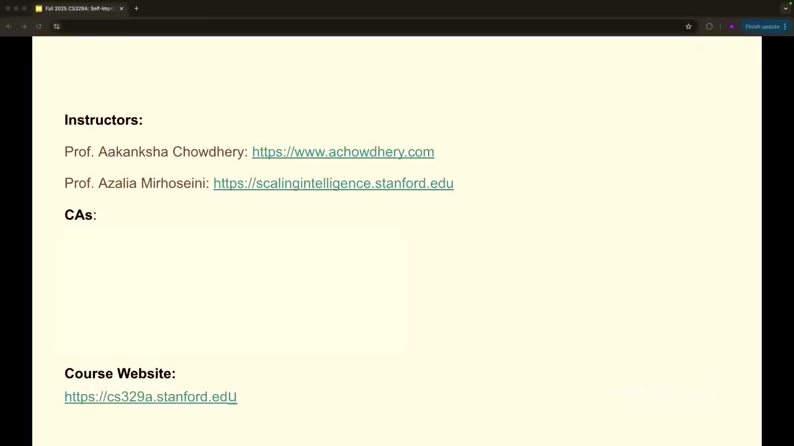
As you increase the amount of compute on the x-axis, the loss function on the y-axis goes down.
And the more compute you have put in, the more the test loss goes down, which leads to a better model. So that was one big aspect that led to GPT 3, then all the subsequent-- ChatGPT, PaLM, Gemini, and so on. And then similarly, as you increase the data set size on x-axis, the test loss goes down further on the y-axis. So that's another aspect of-another axis of scaling that leads to better language models. And the third one is, of course parameter counts. So if you increase the number of layers in a transformer or the amount of parameters that are there in the language model, that improves the loss value, and that leads to a better model.
And this has been the foundation for a lot of-- this has been the foundation for a long time, until last year, where this was starting to hit some kind of a saturation point.
Bigger models, 2018–2024
So from 2018 to almost 2024-this graph is a little bit outdated. But from 2018 to 2024, as the model size has gone up almost consistently, we have been increasing the size of the model. So you started with something like Bert was 340 million parameters, GPT 2 was 1.5 billion parameters, and then GPT 3 was 175 billion parameters, and then PaLM was 540 billion. And then there was a bunch of subsequent models. And GPT 4 is estimated to be there, which is trillions of parameters. So you can imagine that there has been an exponential growth in just the model size for large language models.
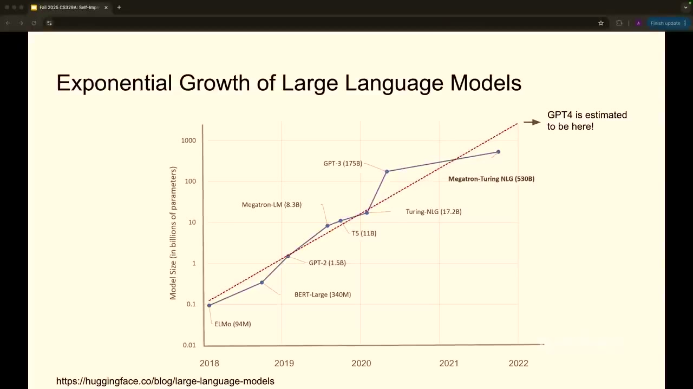
The large stands for that they're growing in size. And that has been one of the key areas in which the models have been getting better. So why do we care about the models getting bigger? What does this lead to? So as I was explaining that as the models get bigger, they continuously improve in performance on natural language benchmarks on various other benchmarks, reasoning benchmarks, and so on. And then the other interesting aspect that I will show you in a moment is that they learn how to do few shot learning. So earlier, you have to fine tune the model for specific domain.
But just by giving a few examples, the model can follow that template and reason in that same vein, which makes it extremely easy to prototype things. And then the third aspect is that as the models become bigger, they have emergent behavior where the capabilities like reasoning only emerge in larger models.
Few-shot and zero-shot learning
So just to understand few shot learning or zero shot learning here. So if the model is given a question or a task, like translate English to French, it's able to give-so this is called a prompt. Like it's a given a task, translate English to French. And then it's asked to translate cheese to whatever is the French word. If the model can predict the answer without actually being trained on the specific task, then that would be called zero shot learning. And then few shot learning, in addition to giving the description of the task, you're also giving a few examples.
So in this particular case, it's giving, translate English to French. And it's given a few examples of the translation from English to French. And then it's asked to translate cheese and it's able to translate that. And you can see that this capability shows up in the large language models across a large number of tasks. And that has been one of the key areas that GPT 3, PaLM, and other models enabled. And then that subsequent innovations came from reasoning aspects of this. So on the reasoning side, as models have become bigger, they have this emergent behavior of reasoning, which Azalia will tell us a little bit more about.
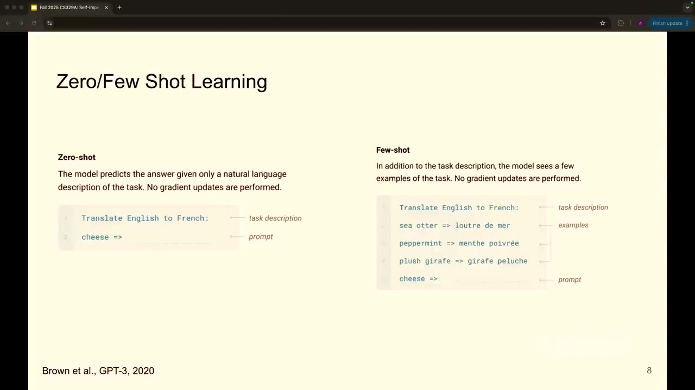
So as the models become bigger, not only we have this predictive scaling laws property that we know how the loss function is going to go down as we throw in more compute data and parameters in the model, there are new behaviors that appear in the model that they didn't have before. And we never could predict that until we had these bigger models and saw this behavior in them. And one of the most important-one of those behaviors is the chain of thought behavior.
And for those of you who are not familiar with this, here is how it works. So in a usual prompting of a model, we can ask a model, in this case, a math problem.
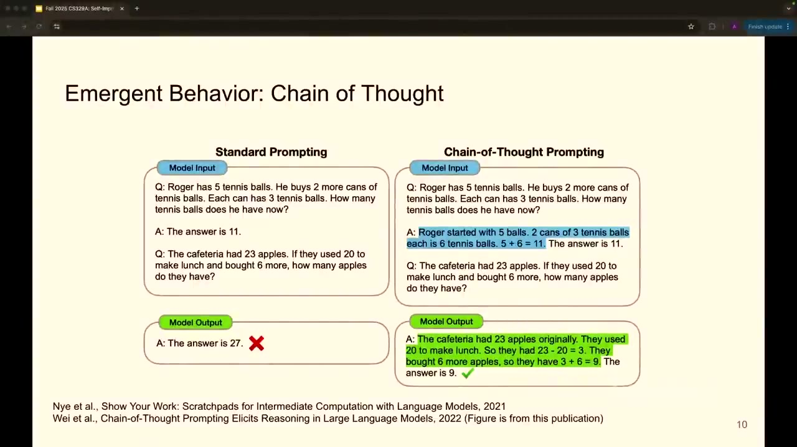
And then we can give it a one shot example. Here is a math problem, here is the answer. Now I ask you a similar but not exactly the same math problem.
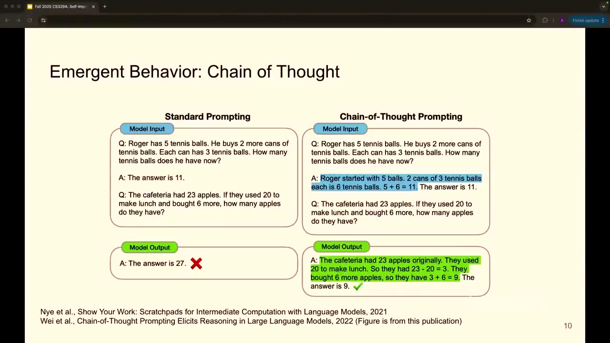
And the model is expected to answer that. And the model might be able to use the one shot example, or it might not be. But we can do better here by not only give an example, but also provide the reasoning or the chain of thought on how we got to that answer. So in this case, the question is a very simple question. Roger has five tennis balls. He buys two more cans of tennis balls. Each can has three tennis balls. How many total tennis balls does he have now? And instead of just saying 11, you're walking the model through how to get to this. Roger started with five balls.
Two cans of three tennis balls is 6, and 5 plus 6 is 11.
And with this example, then the model has become familiar with the process to get to the answer.
And it can leverage that to answer new problems.
Well, obviously, this is a very simple problem. Any 1B parameter model nowadays can solve this. Doesn't need an example or a few shot or a chain of thought.
Chain-of-thought at scale
But the chain of thought property itself is a property that is holding to this day. And it's a very, very important property for the reasoning models and all the thinking models and much of the progress that we have seen in the past year or so. Now, this property again appears as we have larger and larger models. Here are three models, LaMDA, GPT, and PaLM. And as you can see, the chain of thought. And this is some results on some math data set.
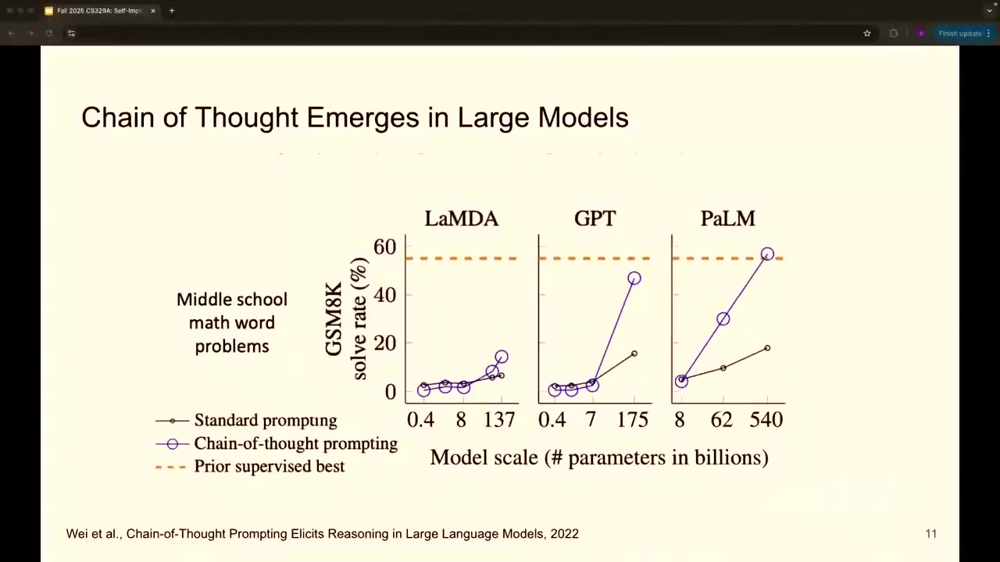
And these models, when they're smaller, like eight billion parameter for LaMDA, or for GPT, around 7 billion, they can't really benefit from chain of thought. It doesn't do anything for them. But as they become larger or for a pull mother again at 8 billion, it can leverage this chain of thought property and learn from the reasoning and the process that is provided in the context in order to solve problems better.
And not only that, there are other abilities to solve new tasks as we increase the size of the models. Like, for examples, models can all of a sudden solve mod arithmetics better or solve word unscrambled problem just by having this larger size and this property.
You see that all of a sudden, it appears at a certain size.
And because of all of this, we still, as in frontier companies and labs, are still interested in pushing the scaling laws and not only get the natural kind of progression, but also we will see more and more of these emergent behavior that is going to be very important.
The ChatGPT leap
Now, a little bit of history here. So ChatGPT was launched in November 2022.
Obviously, it was one of the most successful apps or software ever created. The time to reach one million users for it was five days, which is significantly faster than many of the other famous software that you can see there, or services that you can see there. And there were pieces of innovation on top of just scaling up the parameter size of the model that were very important to make ChatGPT what it was and to make that leapfrog over the previous models, like GPT-3, so on. And two important pieces here were the instruction tooling and the reinforcement learning from human feedback, which we are going to briefly mention in the next slides.
But throughout this course, we are going to learn more and more about them.
And then we're going to learn about all of these in more details. But let's just take a step back and see how the process works.
The post-training pipeline
So the pre-training step is the step at the beginning of any language model training. That's the easiest step. And we just train the model to predict the next token out of all sorts of text and data, and so on. And then this is the fine tuning step that was a key differentiating factor for a model like ChatGPT.
And let's start with the first aspect of fine tuning, which is alignment with human preferences. So when a model is pre-trained, it has no sense. It has seen all data on the internet, in the books, everywhere. But it has no sense of what is right and wrong and what is.
It just statistically knows about the state of the worl, but does it doesn't exactly know things or know how to follow instructions. So the next step in training these models is the step where we try to steer the AI models to follow the goals and preferences and values of humans. And this is still a big problem. It's a big issue. We haven't mastered it yet. But as we progress, models are becoming better and much more powerful in the things that they can do.
So it turns out that we can fine tune the models to be aligned. For example, here are some graphs that show, what if we take our base model that's just pre-trained and fine tune it for things like sensibleness or safety?
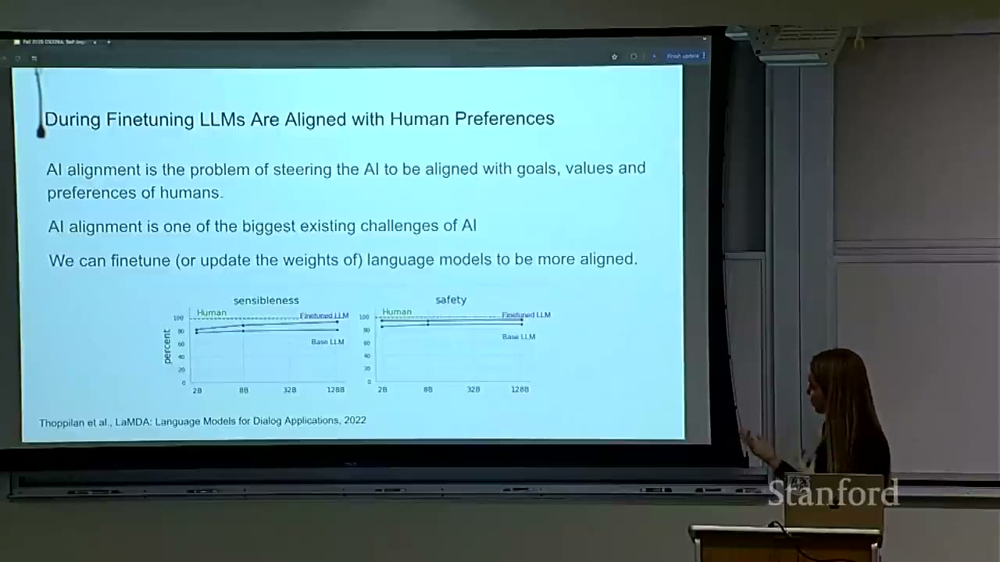
And these are data that we have collected.
These are high quality data for showing the model what we mean by what's safe and what's unsafe or what's sensible and what doesn't make sense. And these are more curated, more highly curated data that we pass to the model for fine tuning and to make the model more aligned with the values or the preferences of humans.
So going back, let's just walk through this process again.
So the first stop when we take a pre-trained language model is fine tuning with next token prediction, which follows the same process as pre-training. But this time on data that is much more higher quality.
For example, this could be data from books, creative essays.
Data that companies pay a whole lot, millions of dollars or hundreds of millions of dollars potentially, to buy this data that's really high quality. And then we train them. We fine tune the model on those, and the model becomes much better as a result of that.
The next step is instruction tuning. And by instruction tuning, what we mean is that we show the model. Again, traditionally in the past two years, this instruction tuning data is a combination of human generated data role templates and the synthetic data. But the way this instruction fine tuning works is that we do have instruction and then question answer pairs, where the model learns how to follow the questions and answers them. For example, here, an instruction tuning data set could be about the weather. Please answer the following question, what is the boiling point of nitrogen?
And then this is the answer. Or we can have chain of thought fine tuning, where we show the model how it can walk through a process to get to the answer. And then we have the label. We have the result over here. And this is like these pairs of questions and instructions and answers. And again, this data set is very-there's a lot of effort that goes into this data set. And the quality of data set and the generality of it has a lot of impact on the quality of the model that we get at this stage. And after this point, then the model becomes more and more like the models we see today.
You can ask them questions, you can go back and forth with them. They have this sense of how to perceive a question and how to walk through some process to get to an answer.
And the next step after instruction fine tuning is this process of using human preferences and fine tuning the model based on that. And this process is called RLHF, or Reinforcement Learning from Human Feedback. The way this is different from the previous step is the way we create the objective function and create the data. So in this case, instead of just creating some supervised prompt and labels, we are basically creating a reward model out of human preferences. So companies spend a lot of money asking humans, sometimes experts, sometimes just humans, normal humans, about questions and the answers generated by the model.
And we asked the humans to rate them, to see which one is correct, and which one is not correct, and that's how we can create some sort of a reward model here. And this reward model is instead of human. Then we can use the reward model in order to guide the parameters of our LLM towards generating answers that are in line with this reward model. So basically we want the generations by the model to be such that this reward model says yes, these are good generations. We're going to learn more about this here, but we wanted you to have the high level idea of what RLHF means.
We can have different reward types, different types of reward. For example, we could ask the model to reward a pair of answers based on their correctness or helpfulness or specificity or harmlessness. All reward functions that we can define. And depending on how we want the models to be and what we care most about, we can weigh these different reward models and use that in the RLHF process.
So these step at a high level, of course, there's a lot of effort goes into that. But pre-training and then fine tuning on higher quality data instruction tuning and RLHF were the core components that made up a model like ChatGPT over something that existed, over all the large models like GPT-3 and prior models. So that made a huge difference in how good and capable the models were. So that was very cool up until last year.
Or a year and a half ago. Pre-training and then fine tuning were the big pieces. But since a year and a half ago, it turns out inference is also a frontier for making the models much more capable. So and that opened a whole set of whole lot of new research and directions and ways that we can make the model better. So let's talk about it a little bit. Like this is the work we did in my lab last year.
Inference-time scaling
Last summer, and it was called Large Language Monkeys.
And it's inspired by the infinite monkey theorem. And it's related to inference scaling. How many of you have heard of the infinite monkey theorem?
OK, that's a good amount. So the idea of the infinite monkey theorem, what it says is that it's not proven. But what it says is that if you have a monkey and a typing machine, and then we keep letting the monkey type all day forever, after some time, we will have the works of William Shakespeare in the things that the monkey types. So we were inspired by that to name our project. But the idea here was that, let's have the LLM be the monkey. And let's ask the model over and over again to solve a given input problem. You can think of it as parallel sampling or parallel generation.
So instead of asking the model once to solve the input problem, you can ask it many times. And also, let's assume you have some sort of verifier or selection mechanism so you can pick which one of these generated responses were correct. And then you output that in your system. That becomes the final output. So the model, instead of generating one answer, generates many, many answers. And then your verifier selects which one of them is correct and then outputs one of the correct ones. You can think of a verifier as, say, some unit tests. If the problem is generating code, the verifier could be the unit test that we run against the code, and we see which one of the code generation passes all the unit tests, and so on.
The reason this can be a possibility here is that models are not-there is some variance in the way the models generate responses. It's not deterministic. And you can even control the variation in the model responses with this thing called temperature. So you can force the model or encourage the model to generate more different responses as you ask a question.
And here, now let's see some of the results of this repeated sampling. For a bunch of tasks, like math and coding benchmarks, we increased the number of samples per problem from 1, which is the normal one, to 10,000. And here, we are showing the coverage or the fraction of problems that are solved by at least one of these samples.
And what we are seeing here is that so the red line, the red dashed line, was the GPT-4o model.
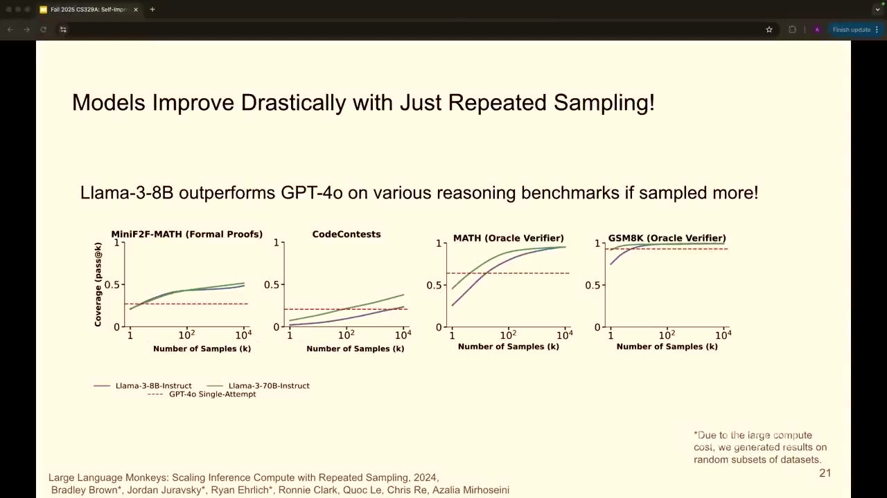
And while these blue and green lines, which were the normal HP, the normal 3HP and 7AB, were worse than GPT-4o model with one sample. But if we increase the number of samples from these models, in all of these cases, they do better than the GPT-4o model.
And what it says is that it kind of seems like the models already know a whole lot more than what you get out of them when you just ask them once, right. So this is the underlying property of inference scaling, because it seems like we can get a whole lot more capability and problem solving ability from these models if we just bring in this inference scaling. Here, we are showing repeated sampling, but there are many other ways to do that. So the reason it's called inference scaling is that we are not touching any of the parameters of the model. The model is fixed, and we are just at inference time.
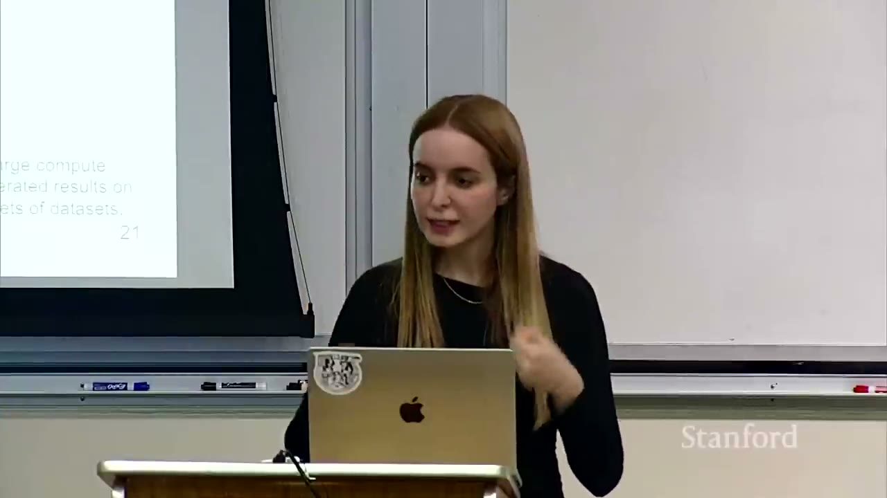
We are creating different ways to generate, to produce generations from the model and use them to generate higher quality answers or answers to harder problems for the model. The interesting part here is that for some of these problems, out of these 10,000 solutions, maybe three or four of them were correct for a single problem. So it shows that how important it is to scale the inference to really get to the core capability of the models. But what is the difference of ways of traversing all of the possible answers and just [INAUDIBLE]?
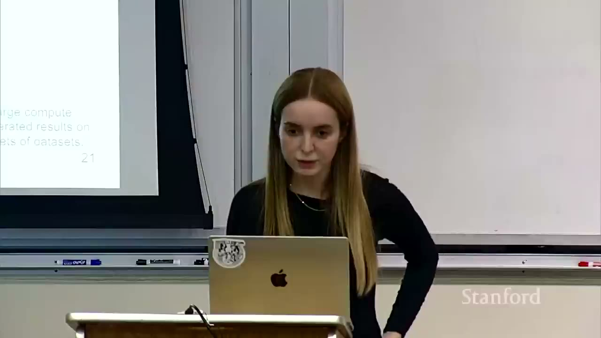
Sorry, what's the question? What is the difference of just ways of traversing all the possible answers and [INAUDIBLE]?
So the possible answers need to be generated somehow by the model, right? So the space of all possible answers to the model is way bigger. if we do like a tree search or a random search, it's way bigger, right. There's no way to hit. Even imagine we are asking a human, just sit down and solve this problem, right.
Of course, there's no limit to human creativity, human's creativity. But there is a limit to how many generations we can have, right. Or if we randomize things, there's a whole lot set of answers that can be generated. And this is highly sample efficient, right. 10,000 is not a whole lot. Especially like, for example, for the math f to f.
Some of these problems are really hard IMO level problems.
These are really hard problems that a tiny model like a 7 and Llama ATP can solve. I was thinking, how does the latency compare to when you do actually generate all those samples compared to the GPT-4o, right? How does the latency-is tradeoff for you? Yeah, of course, there's a tradeoff. And we touch on that in the lecture that I go more details towards this. The parallel samples, the good thing about them that they can be run in parallel. So from a latency perspective, that's less of an issue. But of course, there is the frontier of cost tradeoffs between how much compute you're spending.
And we will look into that. And it varies. It varies depending on the type of and complexity of the problems. Yes? This approach where you have a verifiable domain like math and coding and how do you handle it when you don't have-- Yes, great question again. When you have verifiers, it's much easier. When you don't have verifiers, there's this whole set of research on how to train LLM as Judge or LLMs reward functions or LLMs with tools becoming. And we're going to learn about that all. We have a lecture just dedicated to verifiers, so.
Yeah? Just a quick question, sorry. So does this generalize to any positive temperature?
So as the limit, as the temperature goes to infinity-- No. Yeah, we can have the temperature being too high, because it's going to be gibberish. The model doesn't generate. So there's actually a research project last year was on tuning that or figuring out what temperature.
Usually if you go beyond 1.2 or so, it's not great, yeah.
Yeah. But there are other tricks that you can do to make the model be more-have more diversity in the type of answers. And that can be useful. All right.
So let's look at this. So now, again, going back to the events of last year, year and a half, we had the DeepSeek model. I think it came out in December. Christmas. DeepSeek came out December 2024. Oh, wow. It's been a short time. Short time or long time, I don't know. So then models like DeepSeek came last year. So basically, a core innovation in DeepSeek. And then the one series Gemini thinking and such were that. Now we are bringing this fine tuning and test time scaling together. Because with this test time scaling and the models themselves, we have this new engine that we can generate a whole lot of synthetic data.
For example, for problems like for math problems, where we know the answer. We can have the model generate different answers that leads to that final golden answer. Or for the coding problems, we can use the model to generate tons of data during test time scaling, tons of quality data to solve coding problems. And that becomes part of our training set. Now we can use that to fine tune the model to become better.
So that, bringing these two together became a big piece in thinking models and reasoning models.
And this is an area that is really, really important.
There's just so much to be explored in this. Because again, it's open-ended, right. There's no boundary in how good the models can become with test time scaling, and then bringing that back to the process of training the model or fine tuning the model to become better is very exciting. And that's the self-improving piece that we are very excited about.
Reasoning models
So a little bit about reasoning models. In the language monkeys, what we were showing was the coverage. If we had access to verifiers, we can see the log linear scaling laws with the number of samples.
And OpenAI, when they released o1 last September, they showed the log linear relationship, this time with pass at one for these hard aiming benchmark, which is a set of really difficult math questions.
So what they're showing here is that as they're increasing test time compute, and this is in log scale, the accuracy, the past one accuracy of the model goes up. And this is for test time alone. Previously, this has been shown for training, but it's very interesting that this kind of scaling applies to test time as well, without changing the parameter count of the model.
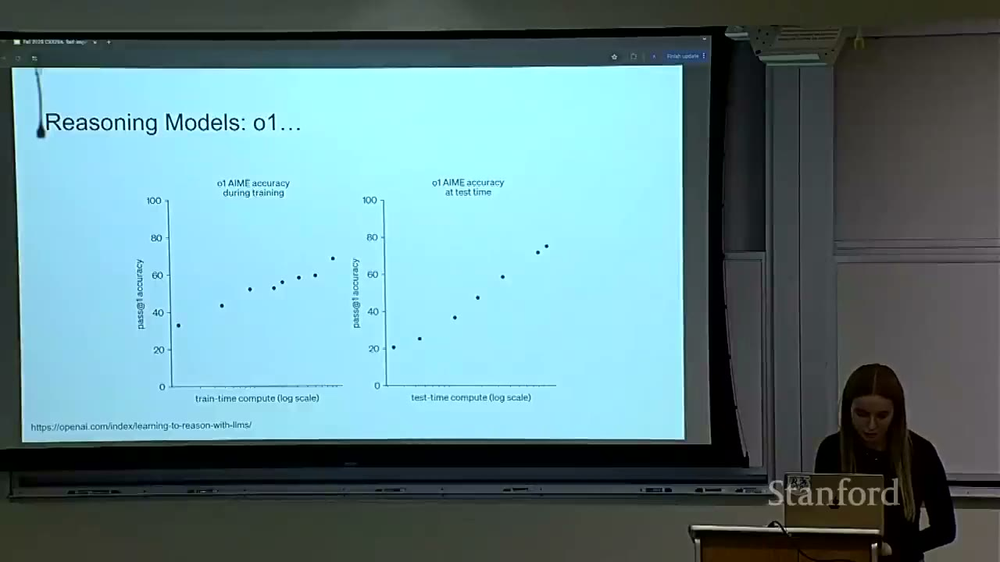
I'm going to walk you through a few examples of how this reasoning or test time scaling works with models like O3 or Gemini. So one motivation here is that for difficult problems, just like humans, think a lot more, spend a lot more time, or consider many different strategies, thinking models do the same. And they may use a chain of thought or other techniques to just go about solving a problem.
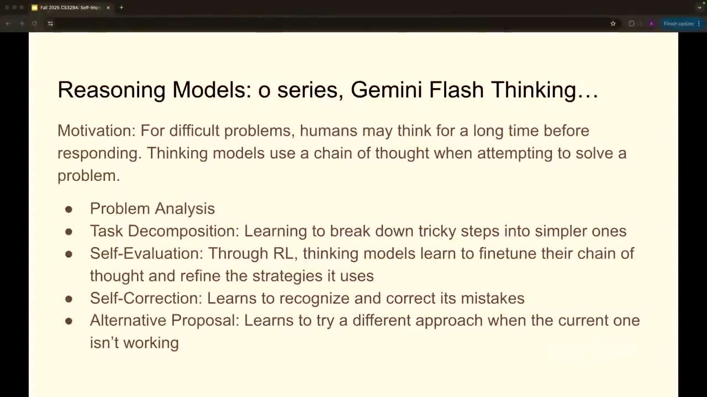
And there are different steps to that. For example, problem analysis is one step. The model first sees a problem and tries to analyze it. Then it can do the task decomposition. Breaking a task into simpler tasks that are more addressable.
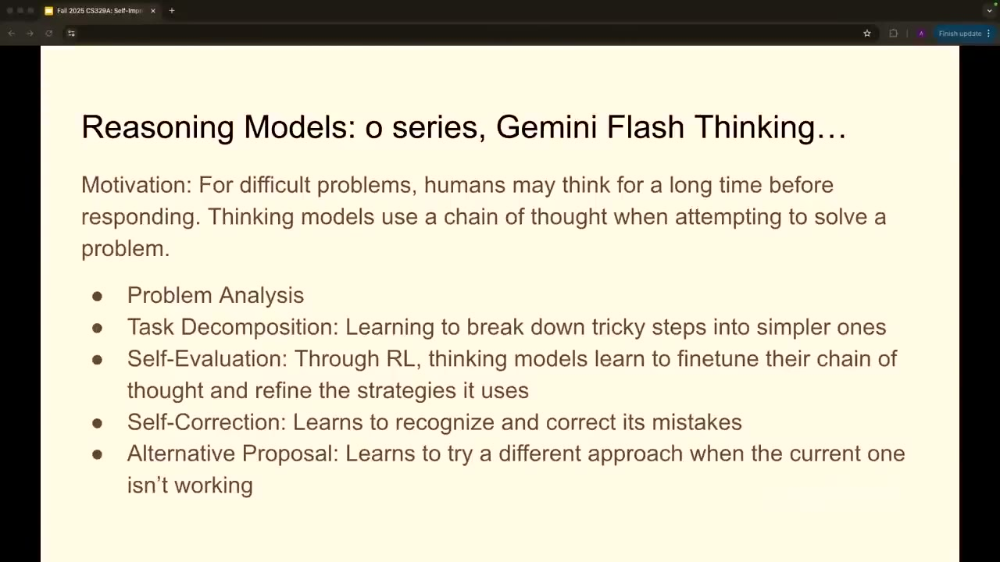
Then there is the self-evolution strategies where the model tries something, sees the feedback. For example, runs some tests on the code or uses a calculator, or just judges the answer. And it can use that feedback to optimize itself. There's self-correction, and there are alternative proposals. If something doesn't work, the model can backtrack and try a different approach.
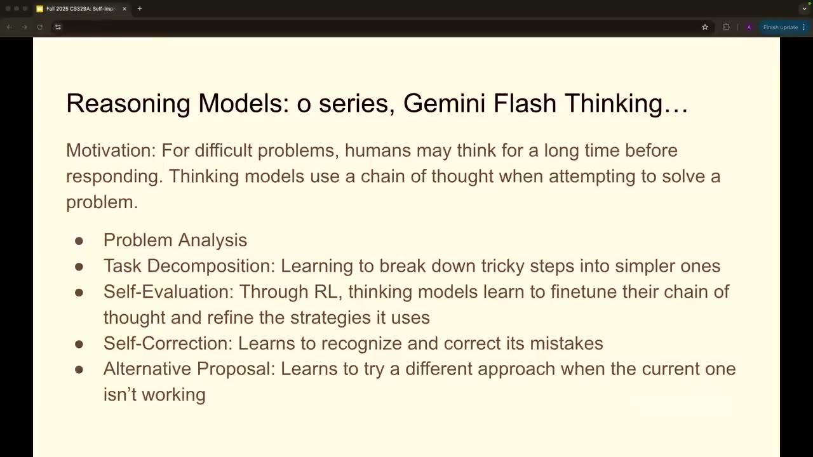
These are some key principles that the model probably at some point, pieces of it were trained as part of the training data set were curated by humans.
But a big part of it is also the model acquiring these skills during this fine tuning process and RL from synthetic data process that the model does.
Here is an example of how o1 does analysis.
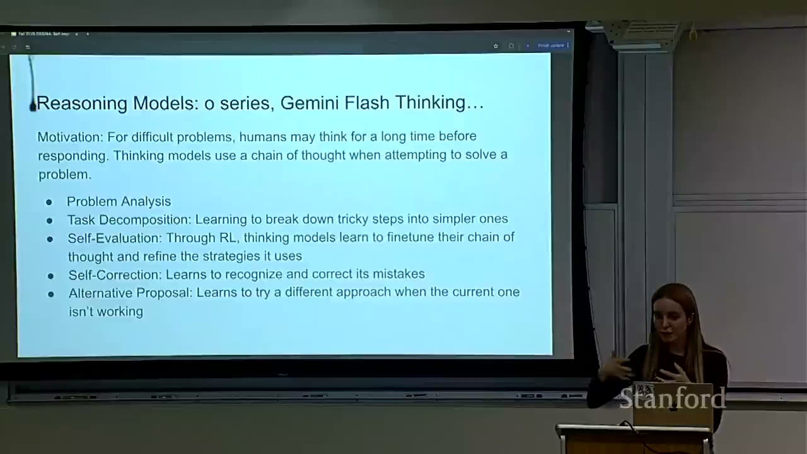
The model is asked to write a bash script that takes a matrix and then outputs the transpose of that matrix. And the model starts with, just like humans, starts thinking, what are the pieces, important pieces, here?
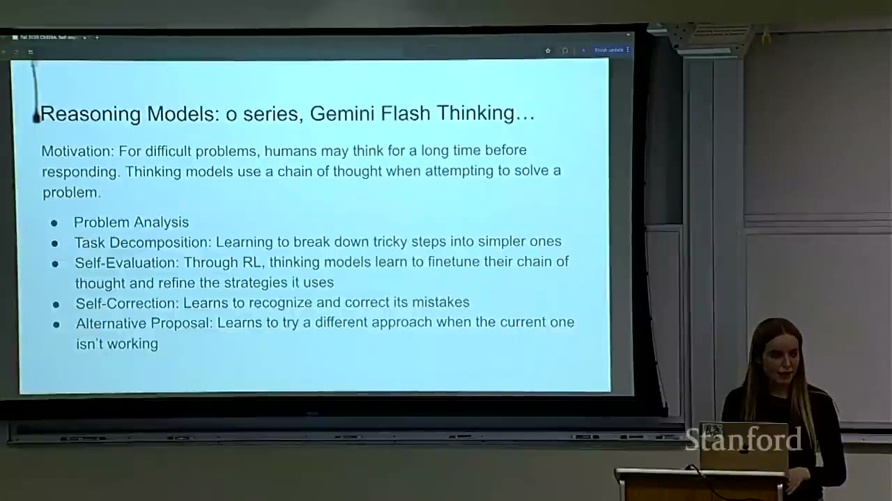
So the user is requesting a bash script. Let's understand the input and output formats of this matrix, and so on. So the model just thinks itself. And amazingly, it's like a progression of chain of thought.
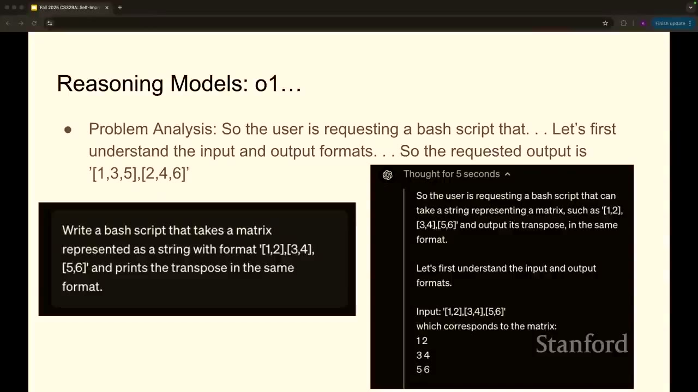
This is like helping the model finding the answer. But the difference between chain of thought and this is that the model itself is producing this chain of thought.
There's, of course, task decomposition, in this case, for the approach. The model thinks about parsing the input, building the matrix as an array of arrays and so on.
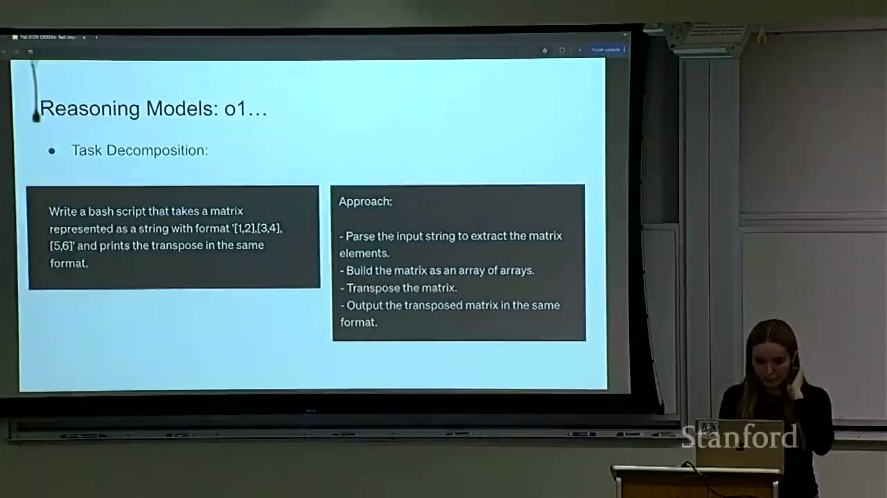
There's also self-correction, which is a big important piece of-this is an important piece here. And I don't know how many of you have seen that when trying with the models that you can see the thinking traces. And this is actually pretty common. The models start something, and then in the middle says, wait, the correct-there's something wrong, maybe. And maybe I need to fix that. And it's very, very cool that the model can do that itself. So reasoning models, when they came out, like models like o1, compared to a model like GPT-4o, which wasn't a reasoning model, they tend to be better in obviously the reasoning task.
For example, in math calculation, data analysis, programming and such, they all outperform GPT-4o, but not necessarily in personal writing or editing texts, and so on. Yeah, question? Do you think the gains due to this asking for a reasonable price is due to actually the act of generating this reasoning traits, or just the act of asking the model to think or do these decomposition at all? Like, for example, if you said, think step by step, but don't generate out loud, but actually generate false positive [INAUDIBLE] without saying. Yeah. I repeat the question.
You were saying, do you think the reasoning models are becoming what they are? Is it based on the loud way of thinking? I think the question is that, is it because of the reasoning, or is it because of things step by step, the chain of thought? Is it the data that's making a difference, or is it the instruction? I mean, so the data basically has made the model become a generalized thinker, right.
And all of these steps, breaking down a problem, being able to backtrack, being able to do analysis, all of these are these skills that the model has learned during this thinking optimization process that now generalize to other things. And they're helping the model right now. So I think the other way to look at it is as Azalia presented, repeated sampling. So if you had just a base model right after pre-training, it would be able to do some reasonings. But at the same time, it will generate different kinds of reasoning chains. And it doesn't quite know which one is correct.
So a lot of what we will cover in train time or test time scaling really comes down to it learns, which is correct. So pass it, one accuracy goes up, which is what you were seeing in the reasoning models. As opposed to pass it k or coverage, which is what you were seeing in the repeated sampling results. Yeah. And one other way to think about it, yes, these deep thinking and things that the model generates is actually helping the model every time to solve a new problem. And although it's very expensive for the model to generate those things, still, we want them to generate those, because it leads to better answers.
Any other questions? Yes? Can you use a different model for the reasoning step versus generating the final answer? Maybe a smaller or a purpose built one just in case the final answer is a large problem?
So typically, the reasoning capabilities have gone up with the model size. So if anything, you would use the larger reasoning traces.
And then maybe you collect a bunch of reasoning traces and then have a smaller model summarize the answer. So the models, this is at least currently, things may change, they like their own traces more. Even if the traces are coming from a better model, they tend to their traces, their own generated traces, more. And we're going to have talk about Swirl. This is one of the papers that-- The multi-step reasoning. The multi-step reasoning that we talk about, what if we bring a different model not in the context of generating reasoning traces, but in the context of evaluating and giving feedback?
And we're going to see that as well. But models, surprisingly or not surprisingly, they like their own traces a lot more. For reasoning models, how are they taught to reason? Is it a hard coded set of sequences that are taught to do traces, or are they somehow fine tuned to say, we need to do this much or this kind of thing, which will cause the traces to generate? So I don't think there's a published piece of work that really covers this bit. It's both, yeah. But it's a bit of both. And at the same time, the base model did have the thinking capability to begin with, right.
Go do some amount of thinking. One thing that we will cover in the class is this notion of outcome rewards model and process reward model, and how you can use that feedback to get the model back.
Yeah, there's always some bootstrapping. Like, OK, here are different ways. Chain of thought itself, which is heavily used in the instruction tuning of data set, shows the model some ways of how to think. And there could be some templates showing for the model, fine tuning. But the things that the model, if you just ask it any question and it comes up with that, there's a whole lot of generalization that. So models have gone way above like what the data or instructions that are used for training them.
Yes? In sampling, is there a way to make the number of samples from-- Please speak up. The number of samples, can they be dependent on problem difficulty? I don't think there's a published piece of work that does that.
So there is follow up work to that where we use a reward model, and then you can use that. So assuming the reward model has some notion of complexity. If you haven't solved, it can guide more sampling, or whether it's repeated or parallel.
From chatbots to agents
But that's definitely an interesting direction to explore. Yeah. OK, we need to get to the-- oh, we haven't-yeah, let me cover this. OK, so you now know about large language models. And then you heard about how they learned how to think, and then they learned how to reason. So what's next, and why is this course relevant? So a lot of what this course is about is that large language models, as chatbots or as reasoning models, are basically still single turn or just in the chat format. So they're not accomplishing a task for you. They're fun to interact with, but they're not necessarily accomplishing a task for you.
What has happened this year almost in the last few months, and it's been surprising, is that agents like Cloud Code or Deep Research have really enabled people to do real world workflows. So they're agentic workflows which can achieve tasks that you ask them to do end to end. So, for example, if you want to go research and figure out, where should I rent a home perhaps for the entire year, if I want to take a class at Stanford, the model would actually be able to do a whole bunch of analysis and go look at a lot of different websites and actually summarize the results and give you pros and cons of different places.
This used to not be possible before. So this will cover a little bit of how that becomes possible and how this course allows you to learn about that. And then Cloud Code for example, if any of you are Codex, which is the coding agent from OpenAI, if you're using that, what you'll see is that just by giving instructions in English, you can modify files, or you can figure out test cases and whatnot. So it really has become a coding productivity tool in the day-to-day workflows for software engineers at this point in time. So what is the transition from LLM to agents?
So as I was giving you the example of deep research and of coding agents, basically now, the model can be given a goal. And it will plan out the steps that it will go interact with the environment. And based on the feedback, it will correct its steps until it achieves the goals or it will come back and say, I cannot achieve the goal. So this notion of having some notion of a goal, taking actions towards that goal, getting the feedback, and then deciding when to stop, that's what makes agents different from the chatbot types of what we were doing before. And this also might require interacting with tools which are external to what the model itself is doing, getting some inputs from there.
But it still stays on track of whatever task it's choosing to accomplish, which might mean that it has to have some form of memory to keep track of the tasks that it's trying to accomplish. So what has been accomplished? So in several cases, in simpler cases, you can achieve these end to end goals. Deep research can be accomplished end to end. But in most scenarios, you are still having very static workflows. So today, what exists is closer to agentic workflows, where you have some sort of an input where you're giving a model the goal. And then what this slide is showing you is that one model is perhaps giving the output like a solution, and then another model is judging it and then deciding based on that, whether the solution should be accepted.
So that's one orchestration framework that's possible. Deep research would be more of the second one, where you basically generating-you're calling the LLM on multiple possible inputs and then aggregating the things to get the output, which will be a summary of the deep research results. So this is a very cartoonish abstraction of what agentic workflows might look like. And you can generalize from there. But instead of having very open ended loop that I was showing you here, where you're supposed to go take an action from the environment and come back and do some feedback, it's easier for open ended problems to construct this graph by hand of how a human would do it and then get this feedback perhaps from an LLM, which is the LLM evaluator here.
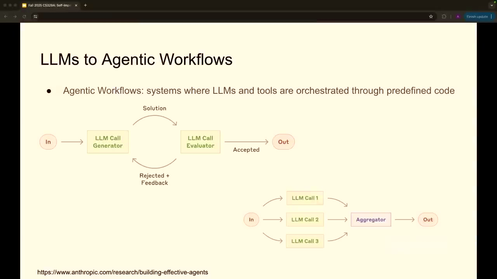
So a lot of the real world workflows still have this paradigm. But in certain cases, we are starting to see signs of life for what's possible in this slide. And coding being one and research being another one. So typically, the workflows will have things like LLM calls.
So you would basically call an LLM with an instruction or some form of input. And then you're asking the LLM to give you an output. It will have some form of verifiers. We'll cover verifiers in a whole lecture by itself. It will have some form of critics or judges, which is effectively LLM as a judge paradigm. There might be tool calls. For example, for deep research, you have to actually go search the web to figure out what exactly is the content that you should be looking at. So there might be tool calls of that form or getting some value around what exactly is the weather.
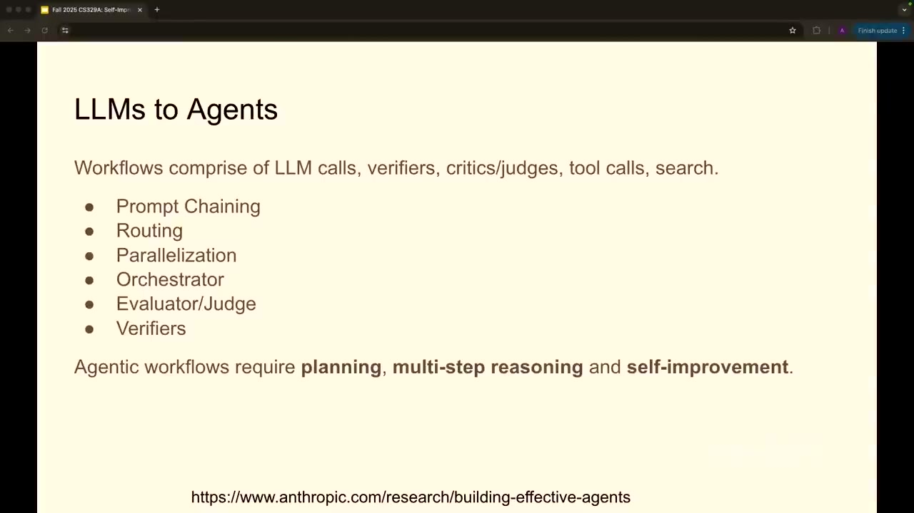
And similarly, search would be another tool call. And then you would orchestrate these in some form of a workflow. So a simplest workflow here would be prompt chaining. So similar to reasoning models where the task gets decomposed into subtasks, prompt chaining would simply be like you have chained a bunch of different subtasks that you're supposed to go accomplish to achieve the end to end goal. There might be routing. Routing works for complex tasks where you say, OK, if this is very complex, then go do this more complicated set of LLM calls. And it's less complicated than do this simpler workflow.
There might be parallelization where deep research is one example where you can have multiple LLM calls work simultaneously on researching different keywords that you give as input to the LLM. And then finally, you aggregate the output. Or you might break the task into independent subtasks and then combine the solution. Or you might have this notion of orchestrator, where you basically are actually using some sort of a, in simple words, LLM manager.
So a central LLM is actually doing the planning. So in Cloud Code, you actually start to see that, that there is some notion of a plan that it comes up with. And then based on that plan, it will make subsequent LLM calls.
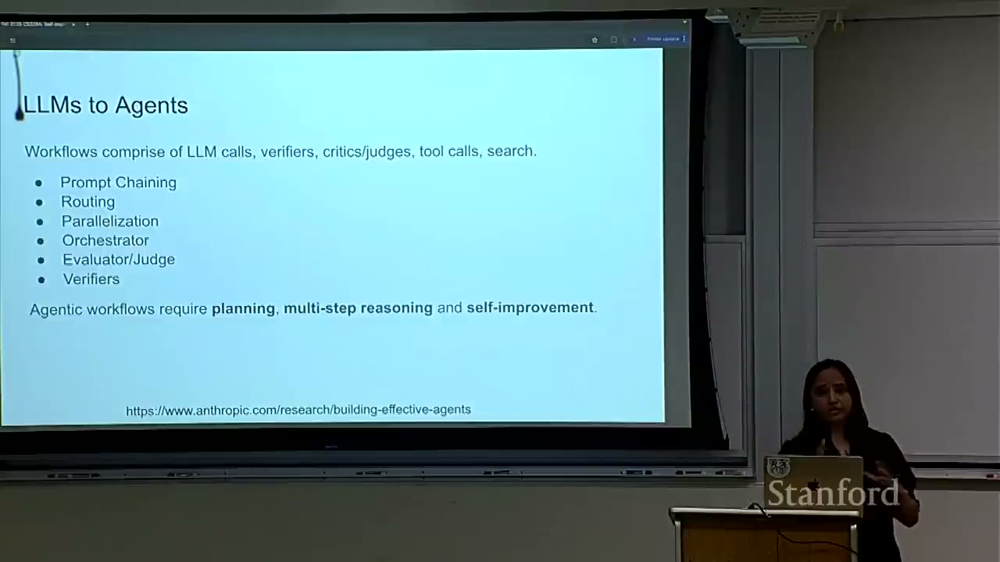
You might have an evaluator or a judge. So instead of getting feedback from real world, like user or from some sort of a actual running a unit test, it actually might just use LLM as a judge. And we will have some homeworks that will cover this aspect. And then you might have verifiers. Verifiers are things where you can actually verify the output. So in code, for example, if you run the code, how do you know that this code is correct? So typically, as software developers we write unit tests. So similarly, verifiers might be running some kind of unit test to check, whether what LLM generated is correct.
And in domains which are verifiable, math, code, and other domains that are more rule based, this verification is a good way to give feedback back to the model so that it can correct its steps.
So most of these workflows mean that the LLM needs to be better at planning. It needs to be better at multi-step reasoning, and it needs to be better at self-improvement. Like when it makes mistakes, it needs to be able to correct itself. So effectively, these are new paradigms that the current set of LLMs just with reasoning were not quite accomplishing. And these are some of the topics we do plan to cover in subsequent lectures. And just to drive the point home around coding agents. So this is a very simple example. I should have updated the slide for Cloud Code.
But basically what this is showing is that you have an LLM agent and it's interacting with the computer. These days just with the terminal, you give it an instruction where you might tell it that you want to implement a test. And then it has some navigation of repositories, searching of files, all of these tool calls around viewing files, editing lines. And then it will go execute a bunch of commands in the terminal. And based on the output, it might be like, OK, I need to go edit this other file, or I need to go look at this other file. So if you look at this loop, this very much mirrors what was-- so this was not quite reliable last year.
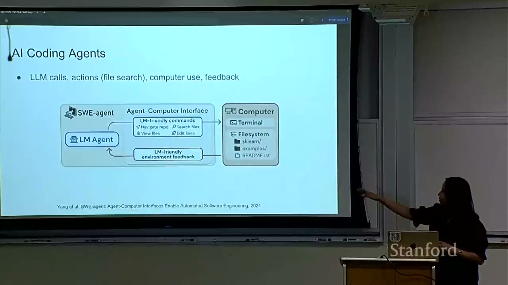
And it's just starting to get reliable in what we are seeing in the realm of coding agents now. Yes? Can I ask why do you think it's not reliable? The general architecture is, I would say, not changed that much. I mean, I think the paradigm is very much the same. It's mostly a matter of more powerful models and then better RL. RL with verifiable rewards is working. The train time scaling is working well. I see. How did you [INAUDIBLE]?
I mean, computer data, right. One of those two. But just also, once the models start to get better, there's this self-improvement loop that kicks in. Because you can now generate tests, and the tests become more reliable. So in the published pieces of work, if you look at, say, code monkeys, which we covered last year, if you can generate unit tests for whatever code the model generated and then see if the generated unit tests are making things better, then that's a very good way to verify things, right? Yeah, model based. It seems like to some extent, if we have good verifiers, we can make the model generate the right code.
But the question is, how do we do that? And there are ways to do it. And we would be happy for you guys to take research projects in that domain, too. But obviously, it's an active research area. But there are ways to make improvements that-- I think what you're alluding to is this notion of generator verifier gaps. So it's easy for models to generate a whole bunch of nonsense or sensible set of reasoning traces or useful set of content. But at the end of the day, whether that's useful or not, we need feedback loop for that. And if you're creative writing, how much feedback can you get?
So human feedback ends up becoming a bottleneck. In domains where you can have good feedback, that's where it's possible to continue to improve the model. And that but we're getting robust verification, a lot of robust verification is hard. So Azalia will cover a paper that she did in her lab about how to combine verifiers. But verification continues to be one of the bottlenecks in this space to make them better.
Yes? Intuitively, I think free training, you get ability to survive at such a large corpus.
So just to me, intuitively, I'm trying to figure out why there's such a big jump. Because we're providing a reward signal, and we're trying to elicit activities that shouldn't exist in training.
So I guess I'm just not-- I think this is still an active area of research. So there are different set of opinions around what really improves the model. Is it RL, or is it the pre-training, the diverse data by itself? And I don't think there is a single point of consensus. At this point in time, both processes help. What you just said, which I will repeat for the class, is that if pre-training is the place where the model, after repeated sampling, should be able to at least have one solution correct out of if it was generating a large number of samples, then this notion of giving feedback should improve the passive one accuracy, but should not improve the model.
Why is it such a big jump? But I think that whole loop is not completely well understood. It's like the first signs of life and it starts to get commercialized. But I think there's a lot more research still open in this area. Yeah, that's right. So that's only one way of thinking about it. There are at least some signs of life which say that you can continue to do RL, and that will continue to improve the model. Yeah. OK. Yeah. So this is basically covering a lot of the same set of points. But one abstraction that is worth taking away from this particular chart is that even when you give the model a goal, it has to clarify the user intent.
So it's not always obvious to it what the model user wants. And then it might go search for relevant files. And then whatever a set of actions which chooses to take, oftentimes, it needs some form of verification. In this particular case, it's based on passing the test. And it might actually generate the test that it needs to pass, which is also mentioned here.
But the key idea is that if you give it a task, how does it come back, and how do you know that it's going to complete what you asked it for? Oftentimes, the users will not specify the problem well enough. So clarifying the user intent so that it knows what to go look for and how to verify starts to become important. And in models like O3, I think they have seen a lot of these traces end to end. So they are able to do the planning, the reasoning, the multi-step reasoning, and come back with the conclusion. But a lot of this is needed for completing tasks end to end or having an end to end goal.
And where this has been super useful is if you have repetitive tasks like code migrations or version upgrades, or if you need to restructure the code base. Or if you have tasks that involve data engineering, where you have to basically do some sort of extract the data and then do some sort of cleanup on the data. Or if you have to do some sort of data warehouse migration. So a lot of this work tends to be extremely repetitive. And it's much easier to just delegate it to coding agents. Same for unit tasks. Oftentimes much easier to start to give it to coding agents.
Another area where agents have become extremely prevalent is in customer support. It's one of the most thankless jobs that when you are on the customer support side of things have to do, and using LLMs to do that definitely streamlines the experience in interesting ways. So one simple set of examples ends up being like you can use them to do live transcription. So that gives you a very nice record. And you're seeing that even for meetings these days. Another simple example is that you can have Knowledge Assist. So if you have a database of information, the customer support agent does not need to know everything.
They can consult with the LLM and get an answer and surface the relevant article, which is better than having just search, an index and search by itself. Smart reply. So in chat, oftentimes, this has existed for a while, but you can use an agent to give chat responses. And then having a call summary can help you-you can use the call summary to really improve the customer experience by itself as well. So overall, I think in the customer support area, there's multiple companies that are going after this area. But there are different segments of the problem that can be addressed using LLMs, and they have been super useful.
And then there's also the end to end stuff that's starting to happen here. And then the third example that we will use and actually some of the homeworks is that if you have very complex topics and you want to provide a comprehensive report, earlier, it used to be that you had to do a literature review, and then you had to summarize each paper, and then you had to synthesize these things. And these days, you can just give it to an LLM and actually do it for you. In the study, maybe more articles than you would. So typically, if you give it an example like, say, 2022 Winter Olympics opening ceremony, it will identify what references to go look at.
Then it will construct an outline of, OK, these references are relevant or not. And then summarize each of the references as to what is the relevant content, and then combine them to create a full length article. Which is very impressive in certain cases, and you'll get to try it in one of the homeworks. And then even more forward looking. These research agents are starting to be used as AI scientists. So basically, they're starting to assist scientists in, say, solving math problems or solving science problems. So here, the LLM is used as a brainstorming thing to come up with ideas.
So the idea generation phase, then the experiment iteration phase, it might actually help you iterate on the experiments that you are hoping to work on. This is from the AI scientist paper. And then in the paper writeup phase, it will help you improve the paper writer by itself.
And what's interesting is that even though these models hallucinate just the notion that they can come up with so many different set of ideas, as an AI scientist, it might actually brainstorm or give you ideas outside what you would have thought if you had just taken a bunch of courses or if you're a researcher and you've been in the field for a long time. Sometimes reading the web allows these alarms to come up with ideas that are way outside the box and can be a very good brainstorming way. So these have been super useful in the AI scientist style of work.
Logistics & grading
OK, so let's move to course logistics. But before that, do we have any questions? Yes? I just want to clarify. So is reasoning and chain of thought linked in training, or is it just a prompt engineering that was accidentally discovering these kind of capabilities in larger models? And if so, are there other emergent behaviors, sites, or reasoning that you think might be discovered?
So I mean, it was not baked in by design.
It was basically discovered. I mean, we gave it hard problems, and then we saw that it was basically-by having reasoning chains, it was doing better. So the GSM 8-K was the first paper that showed signs of life of this. And then with larger model like PaLM, we actually saw that this was a very big deal. In one of the examples there was that it could explain jokes, which was very impressive. And then from there, the reasoning models have emerged. But it has read all of the web, so it has definitely seen data, which is more methodical and systematic.
But the reasoning models are trained to be reasoning more and more, right.
The entire reasoning is not an emergent behavior. The reasoning models, they're trained to be thinking. But the models are converging. So the models are going to be trained such that they know when they need a lot of reasoning and when they don't. And to generate the answers. But chain of thought originally was an emergent behavior. They noticed that, oh, if we explain things, a model gets better. Are there any emergent behaviors in larger models? I don't think I would see it as emergent behaviors per se. But I think as I was mentioning, we usually go looking for certain things, right.
So in the agentic workflows, what we're looking for is planning, which is a form of reasoning. We're looking for multi-step reasoning, which we will cover in class as well. And then we're looking for self-improvement or self-correction. So all of these capabilities would be nice to have. And what gets the models there is a set of questions that are worth-there are papers on this kind of thing. Like self-correction, backtracking, things like that. It's like yes, you could call it emergent, but you could also say, think about it, that they have seen this kind of behavior.
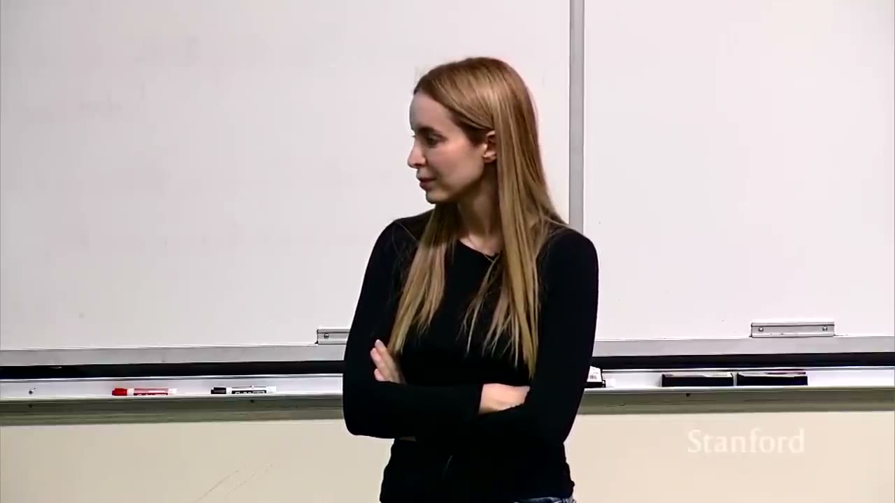
And it's like it's reinforced in the way that they're fine tuned.
So yeah, it's hard to say.
OK, so let's go through the logistics for the class.
Here's a list of all the amazing topics that you're going to learn about.
Yeah. This is very cool. I think the main thing to remember here is that the overall theme stays the same. And then we'll also have guest lectures around from folks in frontier AI labs and covering things all the way from say, how has post training evolved, or even multimodal agents in robotics. So it's going to be a mix of lectures and guest lectures.
And of course, your project presentations.
So here is some logistics that you all know. The prereq are there. Just make sure that you are comfortable with these prereqs as you register in the class. So we have the external website. But make sure that you check Canvas.
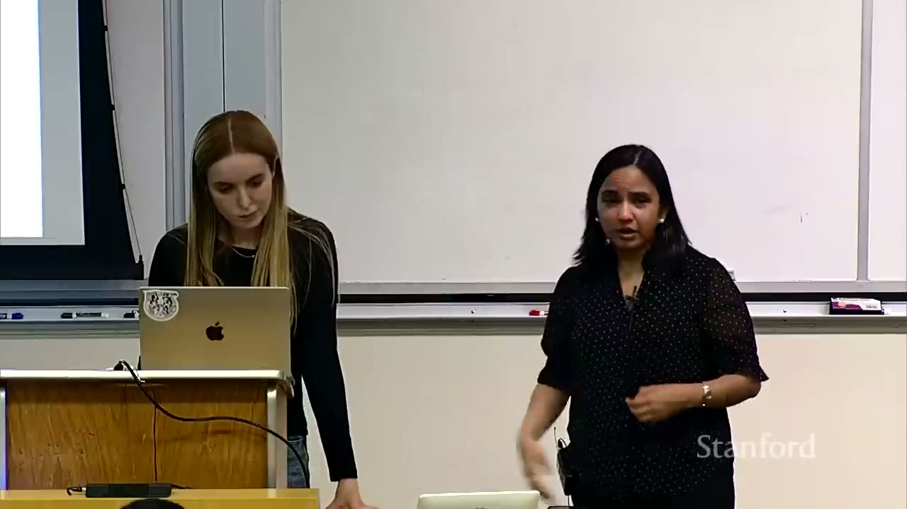
That's where we send out the latest updates at all times.
And we try to upload the lectures before we start in every class, so you have access to the lectures. And we already have the due dates for all the assignments and all the projects. So you can check it out. So this quarter, we are going to have three homeworks. That's a difference from between this class, and that's one of the differences. So we have one more homework for you all that we have designed.
And the TAs have done a great job. And that helps you hopefully learn these topics better and more in depth. And then we also have a course project. So the course project is where you can unleash your creativity and your way of building agentic systems or going deeper into a question and designing experiments around it and see what works and what doesn't. We will provide some examples or suggestions, but it could be completely on you how to design this project.
You will have some examples from last year, like the successful projects from last year as well. It's going to be uploaded to Canvas or-- Actually, we'll display them on the website. Oh, on the website. Oh, cool. The public website, so you can also see that.
So yeah. So for the course project, I think the main thing to remember is that we will have API credits, and you can work in teams of two to four people. Right? Yeah. Or up to four, I guess. Up to four? OK. You can be one if you really want that. We suggest you team up with others.
At the very least, you have more credit collectively so you can run more experiments. But then you might also find a friend collaborator along the way, and you can do something bigger.
And we are going to have this-what is this? The course project. Yeah, we're going to let you know about some of the previous years and some ideas that you can take. Here are some course project examples that are acceptable. For example, a new evaluation data set or a new benchmark.
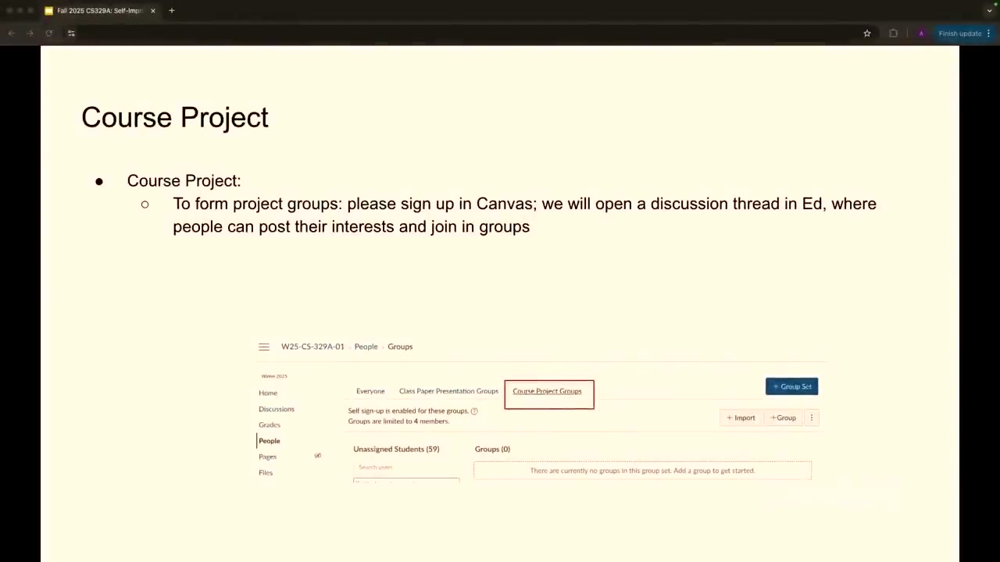
You can design a project around the reliability of an agentic system that already exists. You can take a benchmark that exists and try to hill climb on it with whatever idea, great idea that you have. And then or you can just-- we are going to have a whole lot of papers covered in this course. And we are showing all of that to you. They're all on the website. So as we give these lectures, we expect you to also have read those papers or read the papers along the way and develop better and deeper intuitions on how these methods work. And your project could always be improving those or questioning one of the decisions that they have made and trying to change that or evaluate that.
Negative examples are like a survey paper.
We want something researchy here. So we just don't want just an app that you put together and you just show us something. It has to be like, here is the hypothesis.
Here is the question that we wanted to answer. Here is the type of improvement we wanted to see or the type of properties we wanted to analyze. And then we have built that. Right, we want something that-something more than white coding, basically.
In terms of milestones, I think it's worthwhile to remember that you want to start early. So you need to have a project proposal somewhere around-- I think we put it early October. And then-- It's on the website, yeah. It's on the website. And then for the midterm project presentation, we do want you to have some progress. So two weeks after the project proposal, we do expect you to have-- so start thinking about what experiments you want to run by the time you get to the project proposal so that you actually go run them for the midterm projects. So we do expect you to have made some progress in the midterm project presentation.
It should not just be, here is a proposal. And then the final report has a lot of weight. And then the final poster presentation will be the end of the quarter.
Yes. Let's see if we do a [INAUDIBLE].
I think so. If you add to it, right.
[INAUDIBLE] is independent study, right? Yeah, independent research. Yeah, yeah, that's fine. I think-- I mean, as long as you're doing actual work and it's not just like reusing the work from an exact copy of something, yeah. We had students publishing papers out of their projects in the last quarter. So in the last time we taught the class. So that's something we could be one of you or many of you this time, again, turning your research project, working more on it, and then turning it into a publication at conferences.
And so here is a save the date for our poster presentation.
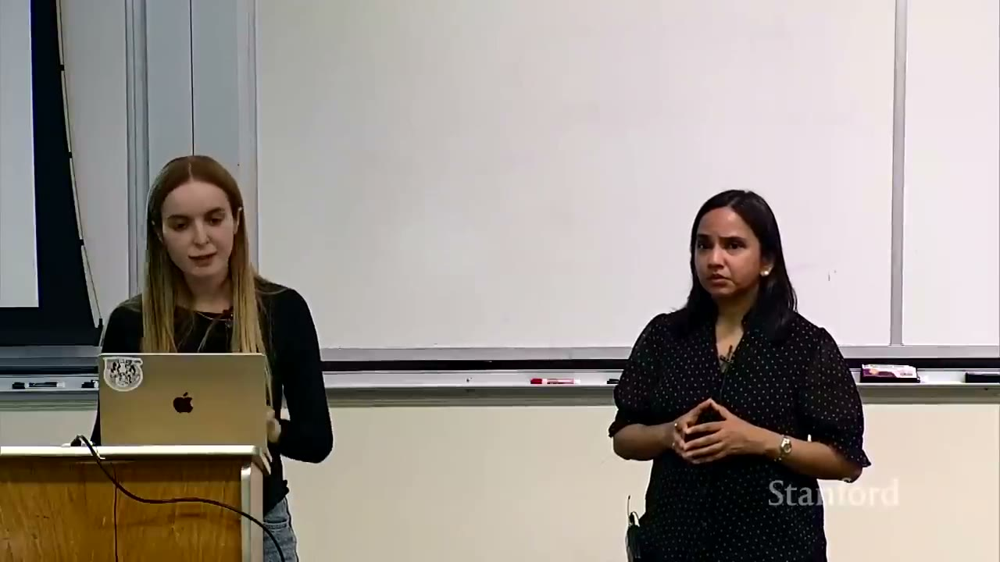
It's going to be December 12, 4:00 to 6:00 PM. So we would want you to be there and present the posters.
We'll have people from industry joining. That's where you can brag about what you've done and just meet new people. Here is the course grading rubric. So we have three homeworks. That's 50% of your entire grade.
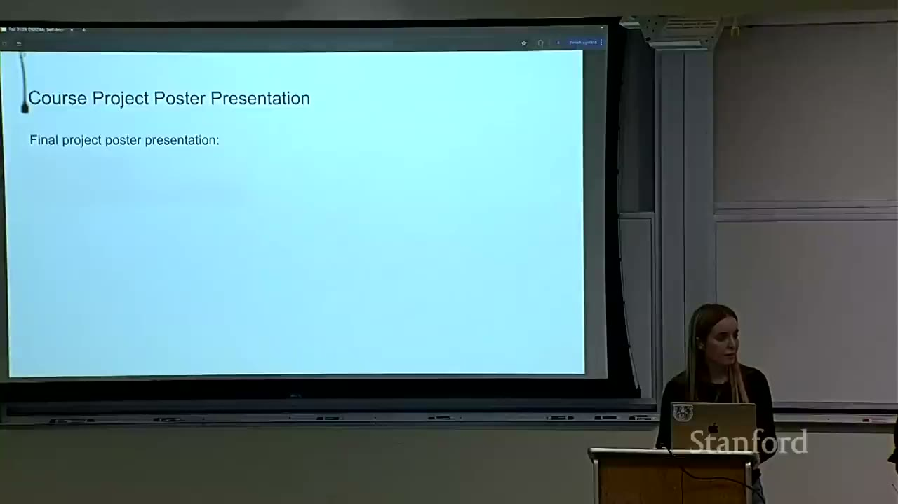
And then another 50% is on the project. And the duration of these are aligned with how much the grading is allocated to each of these.
And we, of course, expect you to honor the honor code.
And let's see, office hours will be posted on Canvas.
You can ask your questions. We really, really encourage you to ask questions on Edson and make it public. Probably if you have a question, it's very likely others have the same question. So please help us do broadcast this to everybody.
Edson is, again, you can ask questions, and then Gradescope is where you submit your project milestones and everything else. Yeah, the homeworks and everything. We have the following late policy that we think is within the generous-on the generous side of things. And because the class is big this quarter, we really can't make any exceptions. So try to use these late days wisely.
Audits are not allowed, but we will have the course-we will have the videos-- Videos on YouTube, eventually. Eventually. And that's it. Any questions?
No? All right. OK. Thanks, everyone.